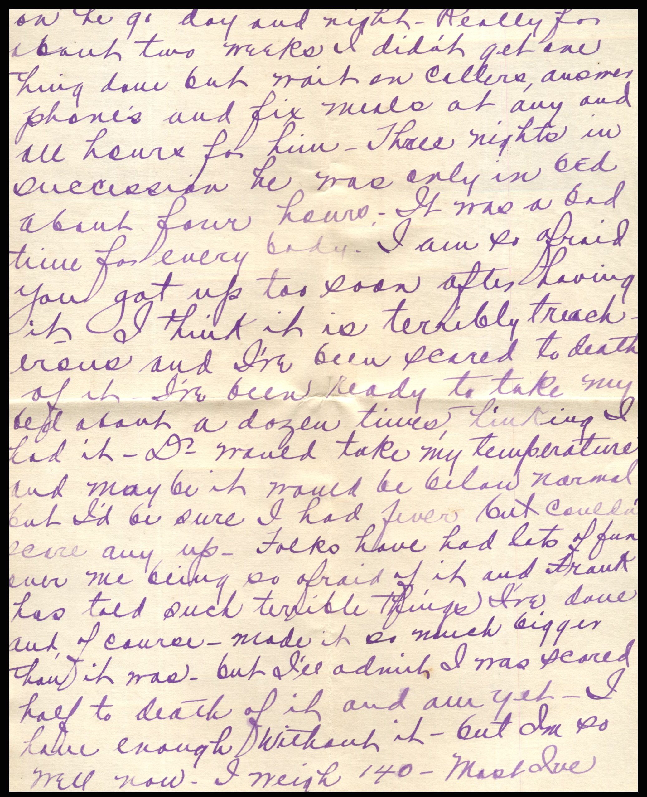
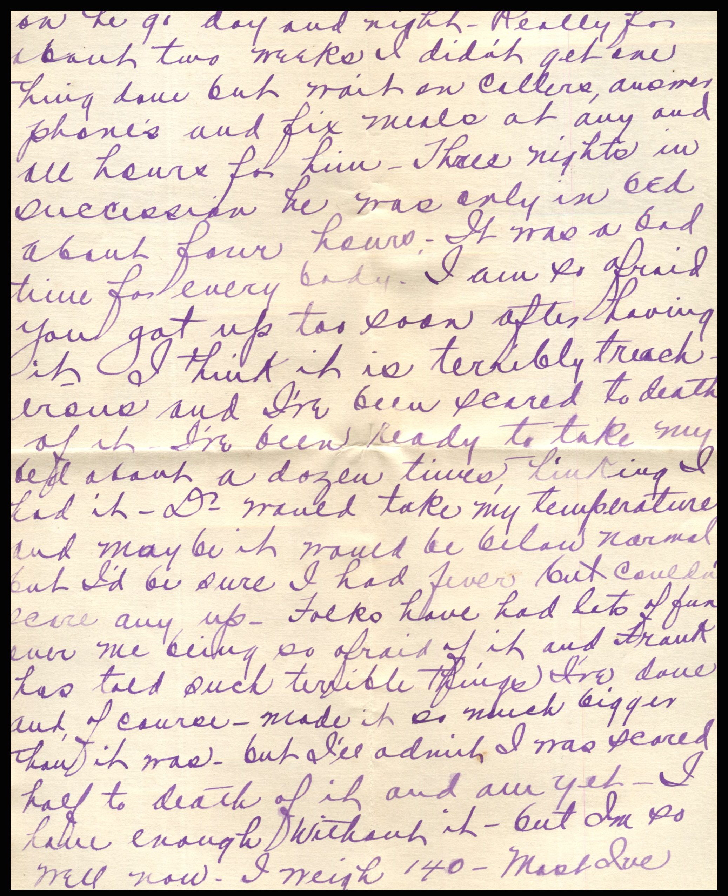
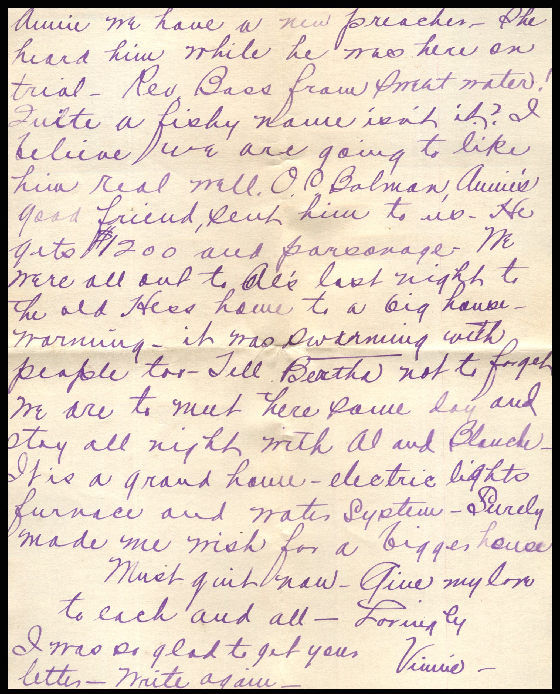
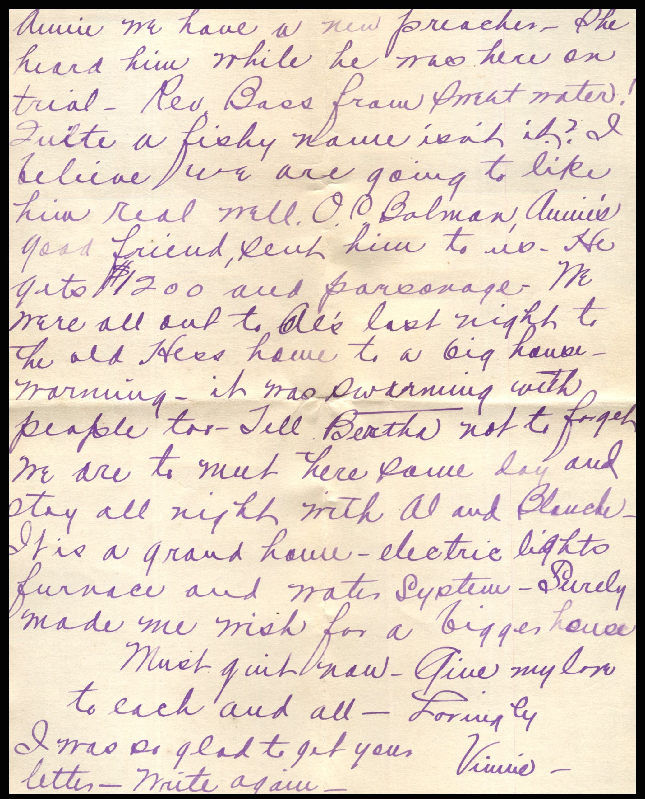

From: Vinnie, To: Jeanette Knox Chandler and Family
 

 From: Vinnie, To: Jeanette Knox Chandler
Mailed From: Milton, Ill. on January 7, 1919
From: Vinnie, To: Jeanette Knox Chandler
Mailed From: Milton, Ill. on January 7, 1919
Milton, Jan 7 - 1919 My dear Aunt Nettie and all- I was surprised and tickled to get your letter today - to show you I was glad, I'm going to answer tonight. I never heard one work about any of you having flu - I may as well be 1000 miles away from you for I never get to see any of you and seldom see anyone from Pearl and Grace is in NY - another shack - I never dreamed she was so far away. I ordered some Libby Jam and preserves through our grocer last week. We used to get it in Wichita and it was lovely - Yes it does seem so strange to think of Ruby being a Mother - and I've never got used to Grace being one yet. I thought surely I'd write to Ruby before now, but when I write to Mae I know they all hear from me or us and I wrote her one big long letter last and the old girl never did answer but Mae said the girls knew when she wrote to me she told all about her and so we were all posted on each others doing better than we are who are only a few miles apart. We have had so much flu around Milton but very little in town. Dr. has treated 200 cases, I have been so worried for fear he'd get it but I never saw him look so well in all my life - he is hungry every mine. He is so strong and well and I never saw him so happy. But he has been on the job day and night. Really for about two weeks I didn't get one thing gone but wait on callers, answer phones and fix meals at any and all hours for him. Three nights in succession he was only in bed about four hours. It was a bad time for every body. I am so afraid you got up too soon after having it. I think it is terribly treacherous and I've been scared to death of it. I've been ready to take my bed about a dozen times, hinting I had it. Dr would take my temperature and maybe it would be below normal but I'd be sure I had fever but couldn't scare it up. Folks have had lots of fun over me being so afraid of it and Frank has told such terrible things I've done and of course - made it so much bigger than it was - but I'll admit I was scared half to death of it and am yet. I have enough without it - but I'm so well now. I weigh 140 - Most I've weighed for many days - I'm thinking very seriously of going to Wichita in Feb. I think if I can stay up this winter I'd be feeling fine in the spring. Tell Annie Grover's address is Cleo, OK. That was killing about the letter and she sure took good care of herself when she had the flu too. Didn't leave you with a cough? It was a wonder it hadn't hurt Ruby badly as it goes so hard with young mothers usually. I'll bet little old Knox was glad to see his Mama come in to Pearl. Uncle Lige phoneme about the boy and he was so tickled he could hardly tell it. He also told me you had gone, and I was so glad for Ruby and you too. You don't have any idea when Martin will be coming home? I had such a lovely visit with Mrs. Dadey last month at Pitts. and she said she had no thought that her boy would not come back. This war has cost many terrible heartaches but with them has come a lasting good, and we will see it in many ways. But it was an awful price to pay - Virginia is still in Jacksonville. She was home for eight weeks. She was quarantined all the time before Xmas and now the old flu has started in the school again. It is discouraging for the kids to have to be shot in so much. I shall send you a Democrat and I know how much Judge and Mrs. Dadey appreciated you sending them the letter from Martin. We will be so glad to see the dear old boy again. It will be so wonderful to year him tell of what he has gone through. It seems to me he could have anything I have, and I could never do enough for him to pay him for what he has been doing to save us from the very thing he has gone through. I feel like we can never do enough for our boys who have been in action. I get so worked up over it that I think I'll drop the subject. Lucerne and Margaret haven't been bad. Not sick at all Mae tell me. I think that is just splendid too. and it is a wonderful opportunity for the girls. I sure want Knox to come up next summer. How is he on gardening? but I expect you'd need him at garden making time ourself but he is fine at riding in Autas, so I expect thats what we'll do naif we get last he'll be along to tell us what direction we're going. Ask him how he'd like that. He's a dandy fellow any way. And we had a fine visit with Annie too. Tell Annie we have a new preacher. She heard him while he was here on trial. Rev Bass from Sweetwater! Quite a fisky name isn't it? I believe we are going to like him real well. O.P. Balman, Annie's good friend, sent him to us. He fed $12.00 and personage. We were all out t Al's last night to the old Hess home to a big house warming. It was swarming with people tell. Tell Bertha not to forget we are to meet here same day and stay all night with All and Blauche. It is a grand home - electric lights furnace and water system. Surely made me wish for a bigger house. Must quite now. Give my love to each and all- Lovingly, Vinnie I was so glad to get your letter. Write again.